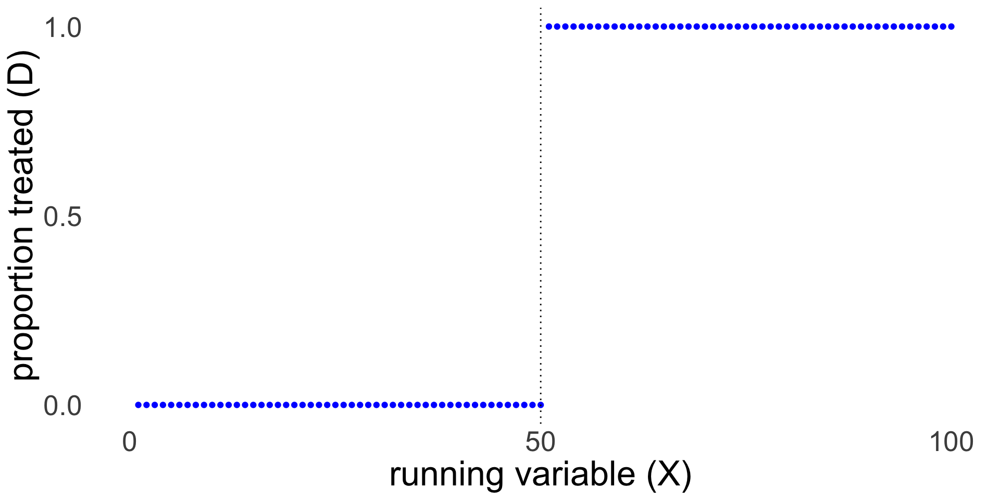
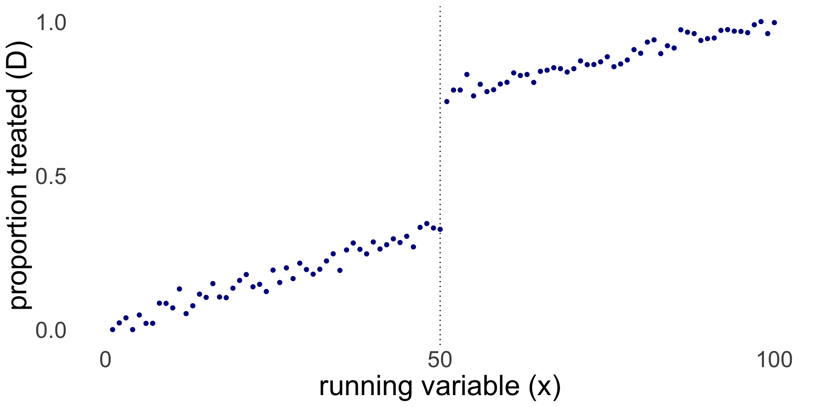
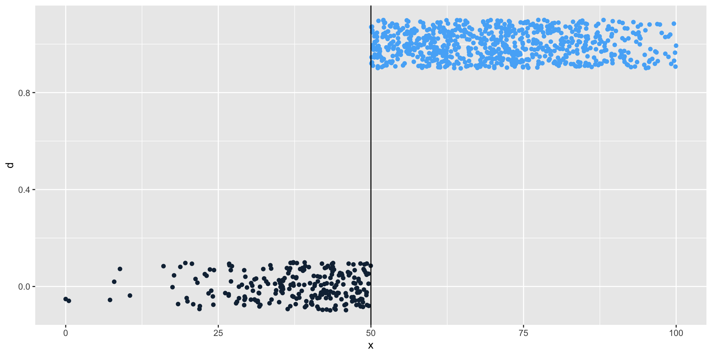
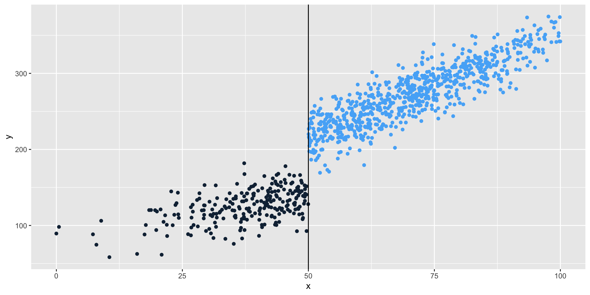
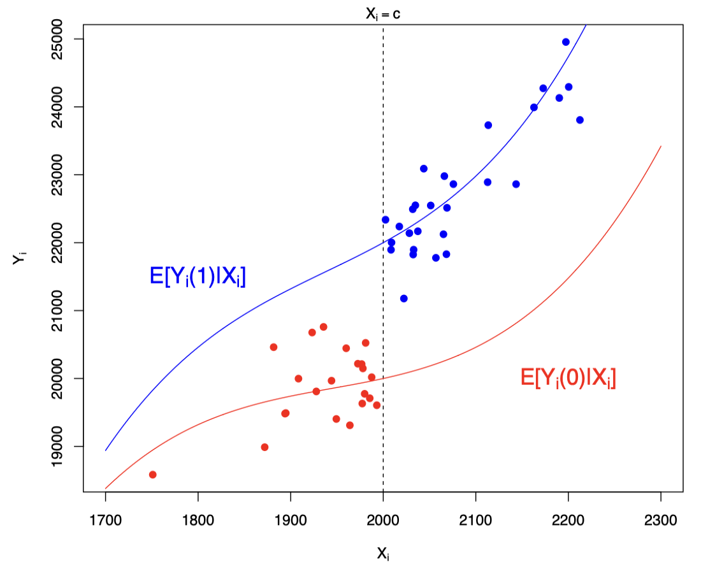
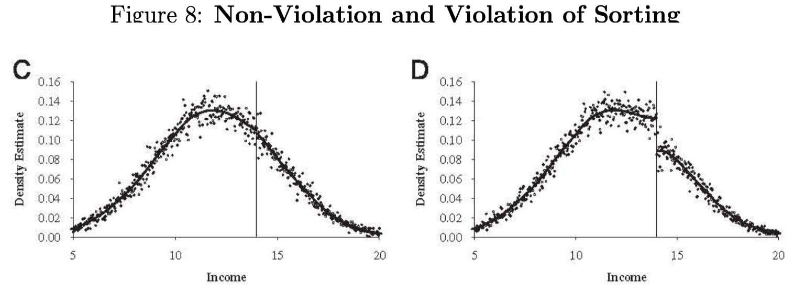

Unlikely that such a perfect \(W^*\) exits. In reality an optimal \(W\) is estimated that mimimises the difference between treated and control units on \(Z\) and \(Y_{t}|t<T_0\). Assume (\(M \times 1\)) vector \(X_1 = (Z_1, Y_{11}, Y_{12}...Y_{1T_0})'\) for the treated unit with all covariates and outcomes up to treatment time (\(M\) variables). Assume (\(M \times J -1\)) matrix \(X_0\) that contains the same columns of the untreated units. Then, \(W\) can be estimated for \(W^*\) such that \(W\) minimises:
\[
\sum_{m=1}^Mv_m(X_{1m}-X_{0m}W)^2
\] where \(v_m\) is a coefficient for variable \(m\) reflecting the importance of variable \(m\), in minimising the difference between \(X_i\) and \(X_0W\). R and Synth chooses \(v\) so that Root Mean Squared Prediction Error (RMSPE) is minimised where
X1, X0, Z1, Z0 all come directly from dataprep object.
****************
searching for synthetic control unit
****************
****************
****************
MSPE (LOSS V): 0.0005048674
solution.v:
0.06786731 0.0009171323 0.0002497557 0.0001939303 0.0003954775 0.01656467 0.3367224 0.008248429 0.01978053 0.1966788 0.03363322 0.00427961 0.1161045 0.1983643
solution.w:
0.006192844 0.001952288 0.003622388 0.002375025 0.00158705 0.005613648 0.004761488 0.02092922 0.01042842 0.2648973 0.6349946 0.03327229 0.003248374 0.003582981 0.002542111
X1, X0, Z1, Z0 all come directly from dataprep object.
****************
searching for synthetic control unit
****************
****************
****************
MSPE (LOSS V): 0.0005460731
solution.v:
0.1522613 0.04675 0.004200871 0.01726939 0.01076942 0.008928617 0.04788228 0.4419616 0.05583099 4.22393e-05 0.0003075346 0.1722856 0.03507543 0.006434768
solution.w:
0.02475861 0.1384927 0.05053769 0.04891854 0.07400801 0.04762289 0.0294627 0.04116999 0.03815864 0.03616288 0.03720407 0.04178755 0.06647764 0.08682001 0.2384183
X1, X0, Z1, Z0 all come directly from dataprep object.
****************
searching for synthetic control unit
****************
****************
****************
MSPE (LOSS V): 0.0002467048
solution.v:
0.05838084 0.04943481 0.05040768 0.04772201 0.05239882 0.09501002 0.04080262 0.1356022 0.05842884 0.07940213 0.1201669 0.006329607 0.1337692 0.07214437
solution.w:
0.0001983812 0.4894395 0.02875322 0.3096396 0.008609138 0.000687094 0.001295664 0.1402324 0.002074929 0.0002413971 0.001160322 0.0005517656 0.01411757 0.001513319 0.001485648
X1, X0, Z1, Z0 all come directly from dataprep object.
****************
searching for synthetic control unit
****************
****************
****************
MSPE (LOSS V): 0.1793011
solution.v:
0.08522735 0.0004204442 9.18569e-05 3.98386e-05 3.94184e-05 0.01427054 0.4618016 0.001399806 0.1350607 4.41851e-05 0.06255731 0.2038799 0.03512876 3.8311e-05
solution.w:
0.01321282 0.02210226 0.01522881 0.03919376 0.03979713 0.01348349 0.01287488 0.07263046 0.04004619 0.01494414 0.01638148 0.6467372 0.01558924 0.02095846 0.01681921
X1, X0, Z1, Z0 all come directly from dataprep object.
****************
searching for synthetic control unit
****************
****************
****************
MSPE (LOSS V): 0.001651303
solution.v:
0.0005868222 0.01359931 0.05229501 0.05568131 0.04004885 0.09035413 0.09990513 0.03900915 0.2124499 0.1596133 4.2379e-06 0.005746471 0.2305669 0.000139575
solution.w:
0.006141562 0.002285466 0.01724027 0.1670271 0.002107469 0.009219208 0.0007301749 0.001037648 0.00221841 0.2724782 0.003927149 0.004507064 0.5098213 0.0007183777 0.0005406494
X1, X0, Z1, Z0 all come directly from dataprep object.
****************
searching for synthetic control unit
****************
****************
****************
MSPE (LOSS V): 7.837784e-05
solution.v:
0.03088714 0.05769279 0.07256682 0.06476906 0.06437788 0.1170097 0.04805494 0.02290319 0.05542746 0.04986589 0.1608906 0.1138618 0.07313656 0.06855617
solution.w:
0.001486135 0.01738757 0.03832477 0.06942791 0.02245042 0.004125819 0.007019438 9.329e-07 0.6124548 0.005926197 0.00508559 0.0005023153 0.01905639 0.08760053 0.1091506
X1, X0, Z1, Z0 all come directly from dataprep object.
****************
searching for synthetic control unit
****************
****************
****************
MSPE (LOSS V): 0.0007159646
solution.v:
0.1663663 0.1438047 8.27891e-05 7.93e-08 3.25079e-05 0.02742595 0.07645302 0.1145234 0.1633917 0.02178579 2.40633e-05 0.09827906 0.01493678 0.172894
solution.w:
0.004584769 0.03985851 0.1481864 0.007965144 0.007981778 0.009264932 0.4228092 0.02588724 0.01062422 0.004704745 0.2718254 0.00553053 0.01315054 0.01499287 0.01263383
X1, X0, Z1, Z0 all come directly from dataprep object.
****************
searching for synthetic control unit
****************
****************
****************
MSPE (LOSS V): 0.007203148
solution.v:
0.1029369 6.1915e-06 0.0009268222 0.0001940402 0.0003264338 0.08120249 0.2600462 0.3574928 0.08937763 6.5711e-06 5.437e-07 0.1071551 1.33e-08 0.000328266
solution.w:
0.05137585 0.01293932 0.01458161 0.001546776 0.005121231 0.003584965 0.05300252 0.003875096 0.007013308 0.7414463 0.02789967 0.002170449 0.01745935 0.016794 0.04118953
X1, X0, Z1, Z0 all come directly from dataprep object.
****************
searching for synthetic control unit
****************
****************
****************
MSPE (LOSS V): 0.01402777
solution.v:
4.0035e-06 1.13945e-05 0.2901716 0.03436731 0.0308597 5.5463e-05 0.06540475 0.3233854 0.004948773 0.2407099 0.0100504 4.8667e-06 1.3238e-05 1.30774e-05
solution.w:
0.005642803 0.003474049 0.003115474 0.001829216 0.001598546 0.3384028 0.003350214 0.002318782 0.01139419 0.00141626 0.003231086 0.6131213 0.00257973 0.004627497 0.003898168
X1, X0, Z1, Z0 all come directly from dataprep object.
****************
searching for synthetic control unit
****************
****************
****************
MSPE (LOSS V): 0.002900825
solution.v:
0.2594905 0.01699657 0.0009060488 0.0009646692 0.01853333 0.1750845 0.142807 0.08489139 0.08000533 0.02284199 0.06782453 0.005564022 0.008342581 0.1157475
solution.w:
0.1780551 0.009516547 0.00504365 0.008105663 0.009628692 0.3515973 0.01575591 0.043155 0.2327301 0.01265258 0.02872467 0.03427792 0.01910029 0.0152482 0.03640834
X1, X0, Z1, Z0 all come directly from dataprep object.
****************
searching for synthetic control unit
****************
****************
****************
MSPE (LOSS V): 0.1453962
solution.v:
0.0001559391 0.003662996 8.913e-07 1.51591e-05 5.7408e-06 4.267e-07 0.4590622 0.2027474 0.1746232 0.1597256 2.57e-08 0 0 4.281e-07
solution.w:
0.01697485 0.002508928 0.0004540435 0.002009722 0.00970972 0.001327584 0.004311757 0.9442191 5.11954e-05 0.002478708 0.008257338 7.72374e-05 0.002603442 0.002275863 0.002740486
X1, X0, Z1, Z0 all come directly from dataprep object.
****************
searching for synthetic control unit
****************
****************
****************
MSPE (LOSS V): 0.009060654
solution.v:
0.07233593 0.0478629 0.03974881 0.07546857 0.04171017 0.08669613 0.5300081 0.03566488 0.03207023 9.14107e-05 0.001520312 0.03572249 0.0008638439 0.000236189
solution.w:
0.165269 0.01657019 0.02073679 0.005566764 0.02678761 0.01489308 0.2813835 0.02240126 0.01205775 0.01930133 0.3574118 0.006338821 0.02672227 0.01221865 0.0123411
X1, X0, Z1, Z0 all come directly from dataprep object.
****************
searching for synthetic control unit
****************
****************
****************
MSPE (LOSS V): 0.7219906
solution.v:
0.02747076 1.15042e-05 1.25769e-05 4.1068e-06 0.2915231 0.05267388 1.04695e-05 2.11474e-05 0.01810741 5.688e-07 6.5936e-06 0.4779982 1.3551e-06 0.1321584
solution.w:
2.4043e-06 1.73044e-05 2.00858e-05 0.1061375 1.05944e-05 1.29272e-05 1.86817e-05 1.79041e-05 0.8936474 1.55618e-05 1.7089e-05 2.3525e-05 2.36207e-05 1.77014e-05 1.76494e-05
X1, X0, Z1, Z0 all come directly from dataprep object.
****************
searching for synthetic control unit
****************
****************
****************
MSPE (LOSS V): 0.002970733
solution.v:
0.001400166 0.05037924 0.07506518 0.03500082 0.06565213 0.001244755 0.3125693 0.007522907 0.02954635 0.0001224073 0.003196945 0.0226571 0.3447559 0.0508868
solution.w:
0.004321332 0.02255771 0.03300085 0.007834375 0.6111054 0.010398 0.02712239 0.01628875 0.004267707 0.006396945 0.2045485 0.009559372 0.0001460547 0.01828604 0.02416656
X1, X0, Z1, Z0 all come directly from dataprep object.
****************
searching for synthetic control unit
****************
****************
****************
MSPE (LOSS V): 0.0007584875
solution.v:
0.01884771 0.03871197 0.01232604 0.0226646 0.0004574561 0.1079908 0.1437863 0.3208035 0.1625558 0.05759849 0.0186102 0.0002276711 0.0946659 0.0007536587
solution.w:
0.01285011 0.02485671 0.01106621 0.1120605 0.01041087 0.08200251 0.009884454 0.004818278 0.02902771 0.01697422 0.01926181 0.0122074 0.03867188 0.01195924 0.6039481
X1, X0, Z1, Z0 all come directly from dataprep object.
****************
searching for synthetic control unit
****************
****************
****************
MSPE (LOSS V): 0.0006323766
solution.v:
0.1230444 0.3172288 0.01998892 0.1353199 0.02095765 0.06802177 0.09153856 0.00342702 0.0004237666 0.1048787 0.04103751 0.006799904 0.05907876 0.008254322
solution.w:
0.0001105499 0.003846454 0.001800404 0.001908123 0.00262274 0.000998464 0.004699336 0.05523457 0.001289689 0.003895255 0.005065419 0.004896258 0.001662369 0.06138781 0.8505824
plot_placebos(placebos)
Regression Discontinuity Design
What is a discontinuity?
We are interested in the causal effect of \(D\) on \(Y\)
Assignment to treatment\(D\) depends on the value of variable \(X\)
After a certain threshold value \(c\) on variable \(X\), treatment is assigned (\(D = 1\))
Crucial assumption: People just below and just above the threshold are basically the same. Random processes put you just above or just below the threshold.
What is a discontinuity?
There are two types of processes for assignment
Sharp: treatment is only and always assigned to everyone after \(c\), never before that value
Fuzzy: treatment is more likely after \(c\) than before but not 100%; some below \(c\) do get treatment
Examples of discontinuities
What is the causal effect of receiving a Distinction for your university degree on income?
Students who get a distinction are also different in other ways from students who do not get a distinction
Distinction is awarded above threshold \(c\), e.g. in Oxford an average of 70
Nobody with average <70 gets \(D\), everyone with >=70 gets \(D\)
What is the difference between a student with an average of 69 and a student averaging 70?
Examples of discontinuities
Do politicians use their office to enrich themselves?
Earnings or wealth for former politicians and those from other careers is likely to be subject to selection bias.
Compare wealth at death for those who narrowly won their election to the House of Commons to those who narrowly lost. Conservatives who narrowly won their elections died on average almost £250,000 wealthier than candidates who narrowly failed (Eggers and Heinmueller).
How different are candidates with who got 49% of the votes versus 51%?
Examples of discontinuities
Does more education lead to better health?
Individuals with more education are different in many other ways than just education compared to people with less education.
In year X, the mandatory schooling age increased from age 14 to 15. People born on August 31st could leave school at 14, those born a day latter had to stay in school for another year.
How different are children who are born 1 day apart?
Impossible for parents to influence reform
Natural experiment / quasi-experimental
Around the discontinuity we assume random assignment
We need a deep understanding of the mechanisms that produce the threshold and assignment
Running variable (aka forcing variable)
Score on the running (aka forcing) variable \(X\) determines treatment \(D\), which in turn affects \(Y\)
\(X\) -> \(D\) -> \(Y\)
Above threshold \(c\) the probability of assignment to \(X\)suddenly changes:
Sharp: below the threshold nobody receives the treatment, above the threshold everyone receives the treatment
Fuzzy: the probability of assignment jumps up at the threshold but the link/compliance is not perfect
Sharp or Fuzzy


Here is an example of a Fuzzy RDD in R. In this cases everyone below \(c\) has \(D=0\), but above \(c\) likelihood of \(D=1\) increases with \(X\).
Discontinuity in treatment

Discontinuity in outcome

RDD and LATE
Treatment\(D_i \in \{0,1\}\)
Threshold\(c\) above which \(D_i = 1\)
Potential outcomes under Treatment and controlL \(Y_i(1)\) and \(Y_i(0)\)
Running/forcing variable\(X_i\) that determines if \(i\) is above/below \(c\)
\[
D_i =
\begin{cases}
1 & \text{if } X_i > c, \\
0 & \text{if } X_i \le c .
\end{cases}
\] Then, LATE is defined at the threshold c as:
\[
\tau = E[Y_i(1)-Y_i(0)|X_i = c]
\]
Continuity assumption

Continuity and no manipulation assumption
Potential outcomes should be continuous at the threshold \(c\) in \(X\)
No jumps at \(c\) for any other variables, only for \(Y\) and \(D\)
A sufficient condition for this assumption is a lack of perfect manipulation
respondents can not manipulate exactly where on the score they end up (ie just below or just above threshold)
you can manipulate roughly where on a test score you end up (ie study hard), but you can not manipulate it by 1 point
Other assumptions
Continuity of POs
No perfect manipulation of \(X\)
Local SUTVA
Sharp RD: Treatment assignment must change discontinuously at the cutoff
Fuzzy RD: Exclusion restriction (here must be no “direct” effect of crossing ccc on the outcome.)
Correct functional form is estimated locally
In-class task: RDD contest (5mins)
Think of your dissertation topic or some topic of interest
Can you think of an RDD in this context?
Discuss with your peer
Checking the continuity assumption
Plot observed variables against the threshold (running variable vs covariates: do we see a jump?)
Are there any other discontinuities?
Placebo discontinuity
McCrary density test
Density test around the cutoff

Sharp Design in equations
Clear cutoff value for the running variable
\(X < c\) : no treatment
\(X >= c\) : treatment
\(Y\) is a continuous outcome
\(c\) is the threshold value
\(D\) is a dummy for treatment (0/1)
\[Y = f(X) + \beta(X \ge c) + \epsilon\]\[or\]\[Y = f(X) + \beta D + \epsilon\]
Sharp Design parametric
To shorten the equations: \(\tilde{X} = X - c\)
\[Y = \beta_0 + \beta_1D + \beta_2\tilde{X} + e\]
\[\beta_1 \text{ describes the treatment effect at threshold c}\]
We often estimate a more flexible model that allows different slopes left and right from the cutoff:
\[Y = \beta_0 + \beta_1D + \beta_2\tilde{X} + \beta_3\tilde{X}*D + e\] Now \(\beta_2\) is the slope of \(X\) on the left and \((\beta_2+\beta_3)\) is the slope on the right.
If we think \(f(X)\) is non-linear, e.g. quadratic, we add a functional form:
## test difference in estimated density functions at the cutoff test_density <-rddensity(tutoring$entrance_exam, c =70)summary(test_density)
Manipulation testing using local polynomial density estimation.
Number of obs = 1000
Model = unrestricted
Kernel = triangular
BW method = estimated
VCE method = jackknife
c = 70 Left of c Right of c
Number of obs 237 763
Eff. Number of obs 208 577
Order est. (p) 2 2
Order bias (q) 3 3
BW est. (h) 22.444 19.966
Method T P > |T|
Robust -0.5521 0.5809
\(Y\) is final test score \(X\) is entrance score \(c\) is the cutt-off \(D\) is the treatment (tutoring)
lm(Y ~ X_centered + D, data = data)*
(* Note Heiss does not include the interaction between \(\hat{X}\) and \(D\) in his example as in this particular case the models with and without are equivalent becasue the slopes left and right are similar)
rdrobust(y = tutoring$exit_exam, x = tutoring$entrance_exam, c =70) %>%summary()
Sharp RD estimates using local polynomial regression.
Number of Obs. 1000
BW type mserd
Kernel Triangular
VCE method NN
Number of Obs. 237 763
Eff. Number of Obs. 144 256
Order est. (p) 1 1
Order bias (q) 2 2
BW est. (h) 9.969 9.969
BW bias (b) 14.661 14.661
rho (h/b) 0.680 0.680
Unique Obs. 155 262
=====================================================================
Point Robust Inference
Estimate z P>|z| [ 95% C.I. ]
---------------------------------------------------------------------
RD Effect -8.578 -4.352 0.000 [-12.101 , -4.587]
=====================================================================